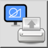
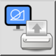
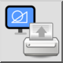
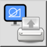

Udskriv aktuel visning…
Værktøjslinje/ikon:
 

Menu: Fil > Udskriv aktuel visning…
Genvej: Ctrl+Alt+P (Mac: ⌘Alt+P)
Kommandoer: printview
Dette er en automatisk oversættelse.
Værktøjslinje/ikon:
 

Menu: Fil > Udskriv aktuel visning…
Genvej: Ctrl+Alt+P (Mac: ⌘Alt+P)
Kommandoer: printview
Brug denne kommando til at udskrive den del af tegningen, der i øjeblikket vises i grafikvisningen.